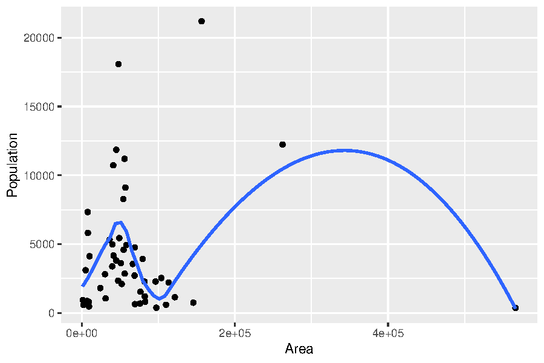
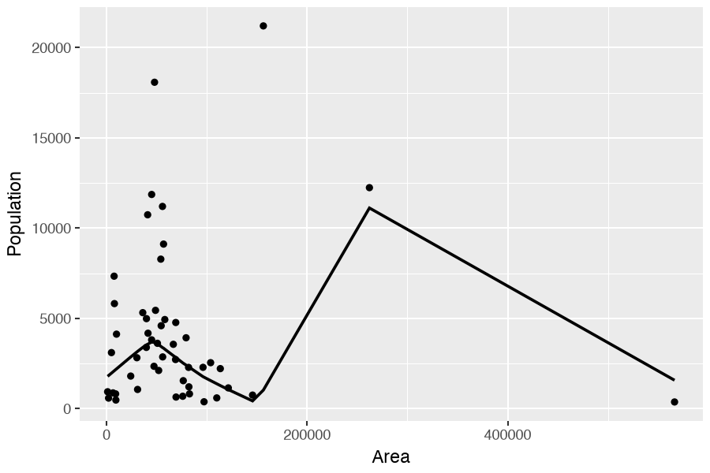

STAT:5400 Section 2.3 — Functions, Loops, and Plots
Most code blocks on this page run in your browser. Blocks that need a Codespace are marked. Click Run Code, change the code, run it again. From here on the two languages run side by side: the R tab comes first, the Python tab does the same job. Where an idea exists in one language only, a one-line note says so, and there is no tab for the other language.
1 Functions
1.1 Write your own functions
- Structure of a function.
function (<arguments>) {
<body of function>
<object to return>
}- Three parts of the function: formals, body, environment.
def <name>(<arguments>):
<body of function>
return <object to return>- The same three parts, under different names: signature, code, globals.
Typing the name of an R function prints its body, because R keeps the source text with the function. Python keeps only compiled bytecode, so the same line prints an address.
1.2 Quadratic equation solver (a bad example)
A question from the old STAT 5400 proficiency exam (no longer given):
For these coefficients the result is correct. The function checks none of its inputs. Its variable names solve and c are also R function names, which makes the code harder to read (see the function-versus-variable example below).
What would it return when a is zero, or when the discriminant is negative?
1.3 Quadratic equation solver (a better example)
NoteWhy the flags matter more in R than in Python
Without the checks, R answers anyway.
Take the checks out and give the function a = 0. R divides by zero and returns NaN and -Inf. Give it a negative discriminant and R returns two NaN values with a warning that is easy to miss. Either way you get a value that looks like a number, and you can carry it into the next computation without noticing.
Python stops at the line that is wrong: ZeroDivisionError in the first case, and ValueError: math domain error in the second.
So errflag is doing more work in R. In Python the interpreter already stops with an error; in R, only your own checks catch a bad input.
1.4 A bug the flags do not catch
Both versions use the formula from the textbook. Try coefficients that are far apart.
Predict The two roots of a quadratic must multiply to \(c/a\), which is 1 here. Will they? Done when you can say which of the two roots is wrong.
NoteAnswer
The product is 0.745, not 1, and no error was raised.
The large root is fine. The small one should be \(-1.0 \times 10^{-8}\) and comes back as \(-7.45 \times 10^{-9}\).
The cause is subtraction. With \(b\) large, \(\sqrt{b^2 - 4ac}\) is almost exactly \(b\), so \(-b + \sqrt{b^2-4ac}\) takes the difference of two nearly equal numbers. The digits they share cancel, and what is left is mostly rounding error. No flag in the function can see this.
The standard fix computes the safe root first, then gets the other one from the product.
q <- -(bval + sign(bval) * sqrt(discrim)) / 2
sol <- c(cval / q, q / aval)That version returns \(-1.0 \times 10^{-8}\), and the product becomes 1.
Vibe Give QuadraticSolver to Copilot and ask it to make the function robust, then test the result on (1, 1e8, 1). Starter files: vibe/s2p3_quadratic_robust.R and vibe/s2p3_quadratic_robust.py. A model may add type checks, a docstring, and a message for the negative discriminant, and still leave the unstable formula as it is. This error raises no message, so nothing points the model to it. Check the revised function on (1, 1e8, 1) yourself.
1.5 Putting a function in its own file
This program is saved in a file called “quadratic.R” (or “quadratic.py”). Running that file puts the function in memory.
Run in Codespace These blocks read a file from disk, so they do not run in the browser.
source("quadratic.R")
QuadraticSolver(2, 4, 1)file:
notes/section2/run/s2p3_quadratic.RIn the Codespace the file is notes/section2/run/s2p3_quadratic.R, so there the first line is source("notes/section2/run/s2p3_quadratic.R").
from quadratic import QuadraticSolver
QuadraticSolver(2, 4, 1)file:
notes/section2/run/s2p3_quadratic.pyIn the Codespace the file is notes/section2/run/s2p3_quadratic.py. Copy it to a file called quadratic.py in your working folder first, and then the import works.
R runs the whole file and keeps everything it created. Python imports the file as a module, and you name the pieces you want.
You may also call a function with a list of arguments already collected in one object.
The two stars in front of a Python dictionary mean “spread these out as named arguments”. One star does the same for a list, filling the arguments in order.
1.6 Local and global variables (name masking)
Predict myfun2 is the same three lines in both languages, and y is -1 outside. Say what each version returns before you run it. Done when you can explain why one of them never returns anything at all.
NoteAnswer
R returns 0. Python raises UnboundLocalError.
R finds no y inside the function, so it walks outward to the global -1. The result is stored in a new local y, and the global one is untouched.
Python decides before the function runs. The body assigns to y, so y is local everywhere in it, including on the line that creates it. Reading it before it exists is the error.
The two languages agree on myfun3. <<- and global both mean the outer name, and both set the global y to 0, so it stays 0 after the call. Avoid them.
1.7 A confusing example (function vs variable)
Think about what the following code outputs.
- R is smart; it knows when a function or a variable is needed.
- However, it may cause confusing code and this is something you should avoid.
- Python is not smart here; one name holds one thing at a time.
- The name
listnow holds your data, so the functionlistis gone until youdel list.
R separates the two lookups and recovers; Python does not. In Python, reusing a built-in name such as list for your own data (called shadowing) is a common bug.
1.8 Lazy evaluation
- Use
=rather than<-when you assign function arguments.
Python has no lazy evaluation: an argument is computed before the call starts, whether the function uses it or not. The walrus operator := (Python 3.8 or later) assigns inside an expression, which lets us run the same experiment.
Look at the third R block. myfun6 never uses x, so R never evaluates the argument and the global x stays 0. Python evaluates it first, so x becomes 1 either way.
1.9 Infix and prefix functions
Every operation is really a function call in both languages:
We may use it as a regular function:
Subsetting:
R lets you name the operator itself with backticks. Python keeps the plain-function versions in the operator module instead. Note the index: R counts from 1, Python from 0.
Ask AI:Why can I define a new infix operator in R but not in Python? Explain what R is doing with the %...% names, and what Python decided instead and why. Keep it to one short paragraph per language, and end with the one thing Python does let me change.
1.10 Writing your own infix functions
No Python counterpart: you cannot invent a new operator in Python. You can only change what an existing one does for your own class, by defining a method such as __add__.
1.11 Use a clean environment
rm(list=ls())- In fact,
ls()lists the objects in the global environment,.GlobalEnv. - Try
ls.str()to get a more detailed list.
del myfun1, myfun2dir()lists the names in the current namespace;globals()gives the names with their values.- Python has no one-line “delete everything”; restarting the kernel is the normal way.
Do not run these on the page: they would erase the objects the blocks above created.
2 Loop
2.1 Looping
The third R block has no Python counterpart: for in Python is a statement, not a function you can call by name.
2.3 The apply family of functions in R
applylets you apply the same function to each row or column of a matrix, and returns results in a vector.lapplyapplies the same function to each member of a list.sapplydoes the same job aslapplybut returns a vector.tapplyfunctions on a group level of a variable.
The apply family is an R idea with no single Python counterpart. NumPy does the same jobs with an axis argument, and lists are handled by comprehensions; both appear in the tabs below.
The browser has no precise clock, so the timings on this page use a helper timeit(). It runs each expression 10 times and reports the median wall-clock time in milliseconds (median_ms), in R and in Python alike. The R helper takes the code itself. The Python helper takes each expression as a string in quotes, because Python evaluates an argument before the call starts (see Lazy evaluation above).
By hand A chatbot was asked for the fast way to get the column means of a large matrix. Its answer is in the comments, and two claims in it are wrong. Run the block and compare the timings. Done when you can name both wrong claims. No AI for this block.
NoteSolution
colMeans wins. Both claims are wrong.
apply is not vectorized. It is an R loop with the loop written for you, so the per-column work still happens in R. And colMeans is not a wrapper around apply: it is separate C code that walks the matrix once.
In the browser colMeans is usually a few times faster here; on R installed on your own machine the gap is much wider. Read the median_ms column: the median of 10 runs, in milliseconds.
A vectorized function still loops. The loop runs in compiled C code instead of in R.
The apply family is not the most efficient way in practice.
A.mean(axis=0) is the NumPy version of colMeans, and it wins for the same reason: the loop over columns happens in compiled code, not in the language you are typing.
2.4 lapply and sapply
- Check the source code of
sapply. - Apply
lapplyon a list of functions.
lapply always returns a list. sapply tries to simplify that list to a vector or a matrix. Both keep the names of l1. The dict comprehension keeps the keys; the list comprehension drops them. Functions are ordinary objects in both languages, so we can put them in a list like any other object.
2.5 Reduce function in R
We may use Reduce to write our own factorial function.
How can we vectorize our factorial function?
math.factorial takes one number at a time. The vectorized version lives in SciPy.
R’s factorial is vectorized already, because almost everything in R is. In Python you have to pick a function that was written for arrays.
2.6 How big can a factorial get?
By hand A chatbot was asked for a factorial that works for large inputs. Its answer is the comment inside the block, and it makes two claims. One of them is true in Python and false in R. The other is bad advice in both. Run the cells and decide which is which. Done when you can say what each language returns for 171. No AI for this block.
NoteSolution
Python supports arbitrarily large integers; R’s factorial uses doubles.
Big integers: true in Python, false in R. In R, factorial() and prod() return doubles, and a double stops at about \(1.8 \times 10^{308}\). So factorial(170) is finite, factorial(171) is Inf, and prod(1:171) is Inf as well, with no warning. Python integers grow as long as memory allows, so math.factorial(171) is exact and has 310 digits.
Recursion: bad advice in both. A recursive factorial calls itself once per step, so fact_rec(2000) stacks two thousand calls before the first one can finish. Both languages cap that stack, and both let you read the cap: the two cells above print it. On a desktop install sys.getrecursionlimit() is 1000, and this function stops working at a depth of 997. In R, getOption("expressions") is 5000, and R stops at 4986 with “evaluation nested too deeply”. So 2000 is past Python’s cap but inside R’s. This is why Python raises RecursionError here, while R goes deep enough to overflow to Inf. These limits depend on the setup. R can also run out of C stack before it reaches the expressions limit, so R in the browser may stop earlier. A loop or Reduce does not stack calls, so it has no depth limit and is faster than either.
When you need factorials of large numbers, work on the log scale: lfactorial in R, math.lgamma in Python. They overflow only for inputs far larger than you will meet: lfactorial(171) is about 712.
2.7 Timing the three versions
One call takes a few microseconds, too short for the browser clock, so each expression below makes 1000 calls.
Run in Codespace A more precise version for your own computer. The microbenchmark package needs a precise clock, which a browser does not have.
library(microbenchmark)
MyFactorial1 <- function(nseq) {
return(sapply(nseq, factorial))
}
MyFactorial2 <- function(nseq) {
return(sapply(nseq,
function(x) Reduce('*', seq(x))))
}
microbenchmark(
factorial(c(5, 8, 10)),
MyFactorial1(c(5, 8, 10)),
MyFactorial2(c(5, 8, 10))
)file:
notes/section2/run/s2p3_microbenchmark.R- In fact,
sapplyandReducedo not really help with efficiency. - May also use
Sys.time()orsystem.time()to time R. In the browser, use the page’stimeit()helper, which repeatssystem.time()and reports the median in milliseconds.
One call takes less than a microsecond, too short for the browser clock, so each expression below makes 10000 calls.
3 Optimizing your code
- Vectorization.
- Simple example:
sumis faster than aforloop. - Matrix algebra is an important example of vectorization.
- Don’t forget some functions like
diff(),cumsum(). rowSums()is faster thanapply(x, 1, sum).crossprod(x, y)is typically faster thant(x) %*% y.- In Python the same idea is NumPy:
A.sum(axis=1),np.diff,np.cumsum,A.T @ B. NumPy operations are usually much faster than an equivalent Python loop.
- Simple example:
- Find the computation bottleneck, either by thinking about the algorithm or by profiling. Profiling comes later in the course.
- Avoid repeated computation:
e.g.,t(a - b) %*% A %*% (a - b). - Avoid copies.
- Inside a loop, call
c,append,rbind, andcbindas little as possible. Create a vector (or matrix) of the final size first, then fill it in the loop. - Python has the reverse problem. A NumPy slice does not copy, so writing into the slice writes into the original array. The R habit of assuming a copy gives wrong answers here, not slow ones. See Section 2.2.
np.shares_memory(A, col)tells you whether two arrays read the same block of memory. Write.copy()when you mean to modify.
- Inside a loop, call
- High-performance languages (later in the course).
- Parallel computing (later in the course).
4 Coding style
4.1 Coding standards: good coding style
- The advanced R. http://adv-r.had.co.nz/Style.html
- The tidyverse style guide. https://style.tidyverse.org/
- R package:
styler, including an RStudio add-in. - R package
formatR: https://yihui.org/formatr/#2-reformat-r-code.
- PEP 8, the official style guide. https://peps.python.org/pep-0008/
- Google’s Python style guide. https://google.github.io/styleguide/pyguide.html
blackreformats a file and has very few options to set. https://black.readthedocs.io/ruffchecks style and common mistakes, and is fast. https://docs.astral.sh/ruff/
In both languages, a common practice is to pick one formatter and run it every time you save.
Ask AI:What code formatter and linter do R projects and Python projects use most in practice right now? Name the current tools for each language, say which are still maintained, and give the one command that formats a whole project. Cite the project page and its date.
5 Plot
5.1 The state data
- These data sets describe the 50 states of the United States of America.
- Variable names:
state.abb: character vector of 2-letter abbreviations for the state names.state.area: numeric vector of state areas (in square miles).state.center: list with components named ‘x’ and ‘y’ giving the approximate geographic center of each state in negative longitude and latitude. Alaska and Hawaii are placed just off the West Coast.state.division: factor giving state divisions (New England, Middle Atlantic, South Atlantic, East South Central, West South Central, East North Central, West North Central, Mountain, and Pacific).state.name: character vector giving the full state names.state.region: factor giving the region (Northeast, South, North Central, West) that each state belongs to.state.x77: matrix with 50 rows and 8 columns giving the following statistics in the respective columns.
The data ships with R. For the Python tab it was written out once to data/state.csv, with the five columns this lecture note uses.
5.2 Building a data frame
5.3 Functions operating on factors
A pandas column of strings is just text. To get a factor you build a Categorical, and you have to give the level order yourself; pandas will not know that “New England” comes first.
5.4 Group summaries by a factor
tapply was in the list of apply functions above, but we have not used it yet. It returns one number for each level of a factor.
Vibe The pandas version is not on this page. Ask a model for it, run it, and compare with the four numbers above. Starter file: vibe/s2p3_tapply.py. Done when the two tables agree to four decimals, in the same order.
Check the order of the rows. R prints the regions in factor level order. pandas will sort them alphabetically unless the column is a Categorical, so a translation that looks right can still put the rows in the wrong places.
5.5 Using factors for plotting and model fitting
The tilde in R is a formula: it says “split Population by div”. Python has no formula notation in this position, so you name the column and the grouping column separately.
The R function dev.copy2eps copies a plot from the screen to a postscript file.
We may also open a graphic device (say a postscript file), produce the plot, and then turn off the graphic device, saving the plot to the postscript file, for instance. Run these two on your own machine, so the plot files are saved to your disk.
dev.copy2eps(file="boxplotstatepop.eps", horizontal=T)
setEPS()
postscript(file="boxplotstate", height=4, width=6)
boxplot(Population ~ div, data=statedf)
dev.off()fig, ax = plt.subplots(figsize=(6, 4))
statedf.boxplot(column="Population", by="div", ax=ax, rot=90)
fig.savefig("boxplotstate.eps")R thinks of a device you open, draw on, and close. Matplotlib thinks of a figure object you build and then save; the file type comes from the extension.
5.6 Plotting functions
- High-level plotting functions create a new plot on the graphics device, possibly with axes, labels, titles and so on.
- Low-level plotting functions add more information to an existing plot, such as extra points, lines and labels.
- Interactive graphics functions allow you to add information to, or extract information from, an existing plot interactively, using a pointing device such as a mouse.
- Matplotlib splits the same work in two:
plt.subplots()creates the figure and axes, then every method of the axes object adds one more thing to it. - There are no separate high-level and low-level functions.
ax.scatter,ax.plot,ax.text, andax.legendare all methods of the same object, and you call them in any order. plt.show()at the end draws the figure. On this page it is what makes the plot appear under the block.
Ask AI:I know base R graphics well: plot() then points(), lines(), legend(). Explain matplotlib to me in those terms. What is a figure, what is an axes, and which base R idea does each replace? Give one small example with the R code and the matplotlib code side by side.
5.7 Example of high-level function: plot
plot is a generic plotting function whose behavior is determined by the class of the object(s) to which it is applied.
- Argument is factor: bar graph of counts of each level.
- Arguments are two numeric vectors: scatterplot with first vector on x-axis.
- Argument is a data frame: scatterplot matrix.
R draws all five columns, factors included. scatter_matrix keeps only the numeric ones, so the Python panel is two by two.
- Plotting one object against each object in an expression.
- Object to left of “\(\sim\)” will be on y-axis.
One R call produced both panels, because plot looked at the class of each right-hand variable and chose a scatterplot for the numeric one and a boxplot for the factor. In Python you make that choice yourself, one panel at a time.
5.8 Log scales
5.9 Low-level plotting functions
Add extra information (such as points, lines or text) to the current plot.
points(x,y).lines(x,y).text(x,y,labels,...).
legend(x, y, legend, ...).
We introduce attach() here for your information, but we should try to avoid using attach() in practice. Python has no counterpart.
Both lowess functions come from the same 1979 Cleveland algorithm, so the two curves should agree. The smoothing fraction is called f in R and frac in statsmodels.
5.10 Interactive graphic functions
locator(n, type).- Waits for the user to select n locations on the current plot using the left mouse button.
- Returns the locations of the points selected as a list with two components x and y.
text(locator(2), "Outlier")The Python counterpart is plt.ginput(2). Neither one runs here: both need a mouse on a real graphics window, which a web page does not give them.
5.11 ggplot2 package
Run in Codespace The ggplot2 package is not installed in the browser session.
library(ggplot2)
p <- ggplot(statedf, aes(Area, Population)) +
geom_point()
p + geom_smooth(method="loess", se=FALSE)file:
notes/section2/run/s2p3_ggplot.R
Run in Codespace The plotnine package is not installed in the browser session either.
from plotnine import ggplot, aes, geom_point, geom_smooth
p = ggplot(statedf, aes("Area", "Population")) + geom_point()
p + geom_smooth(method="lowess", se=False)file:
notes/section2/run/s2p3_plotnine.py
plotnine is a port of the grammar of graphics to Python: the same ggplot, aes, and geom_ names, with the column names written as strings.
2.2 Comments on the
rangefunction in PythonThe
rangefunction in Python manages the list in a memory-efficient way.In Python 2 the same call returned 43272 bytes, because
rangebuilt the whole list. R stores1:5400as a compact sequence too, and only writes out all the numbers when you change one of them.